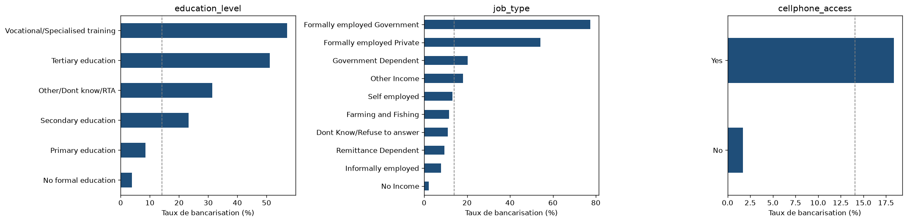
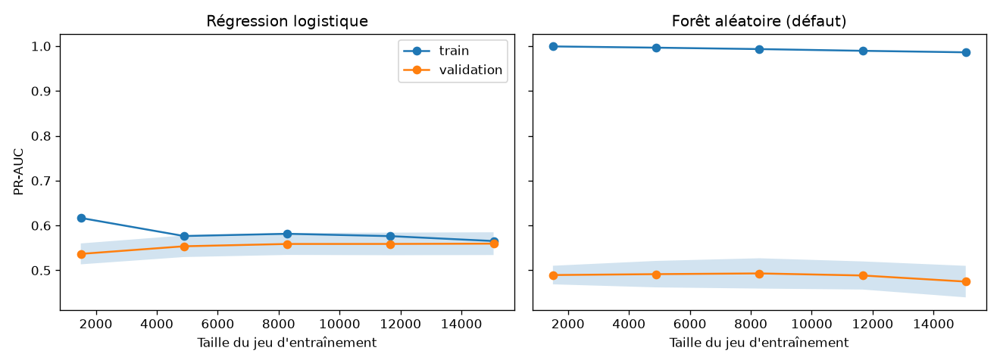
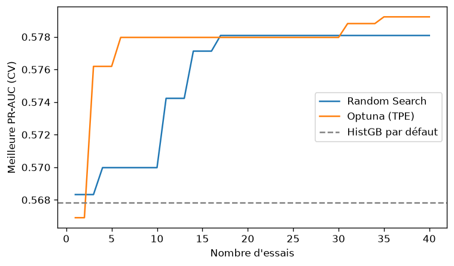
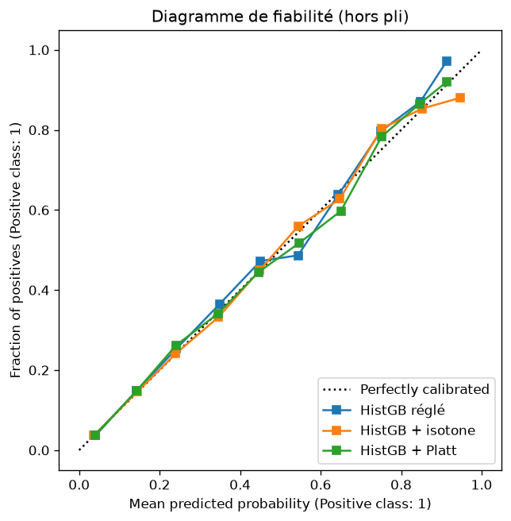
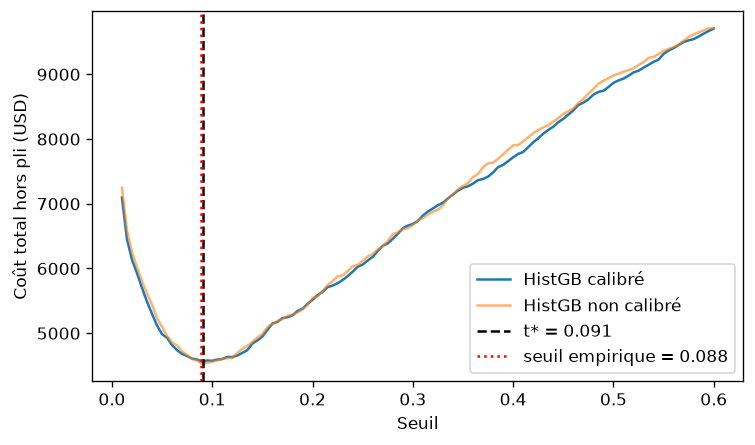
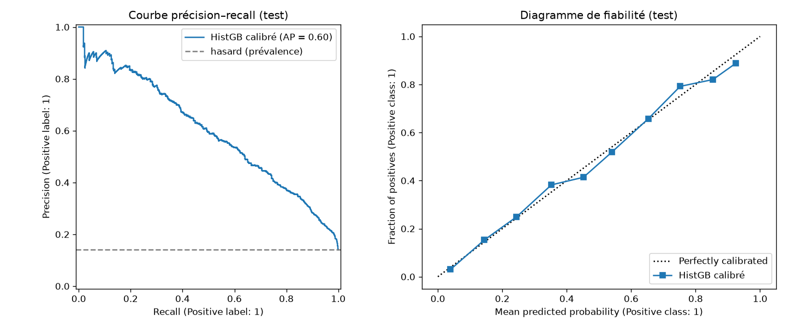
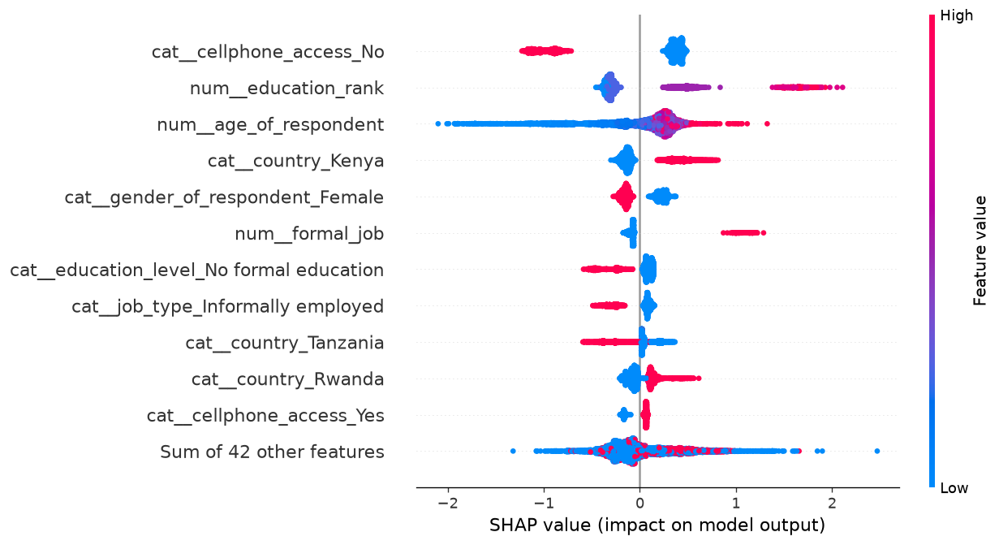
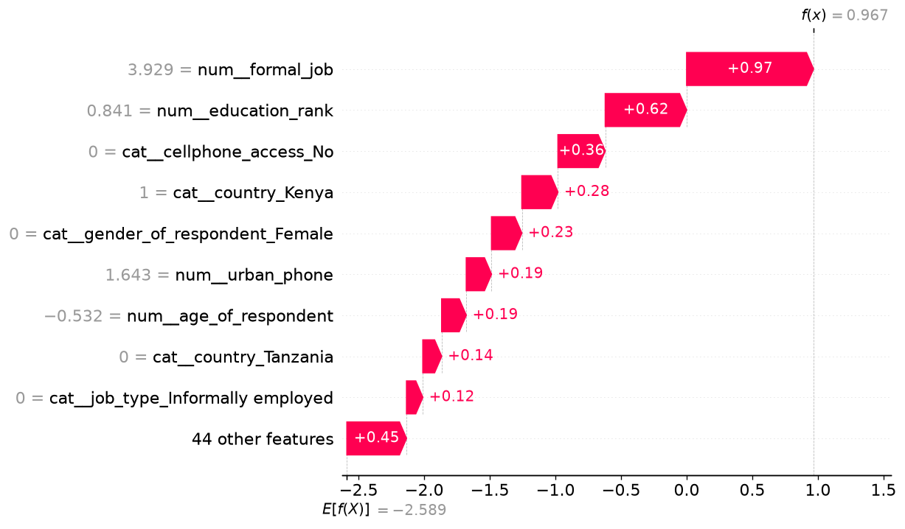

Qui possède un compte bancaire ? Prédire l'inclusion financière en Afrique de l'Est
À partir de 23 524 réponses aux enquêtes FinScope (Kenya, Rwanda, Tanzanie, Ouganda), j'ai construit un modèle qui prédit si une personne a un compte bancaire, puis je l'ai utilisé pour décider qui contacter en minimisant un coût.
Le problème
Une entreprise fictive, KaziPay, veut contacter les personnes qui ont déjà un compte bancaire. Contacter quelqu'un sans compte coûte 0,5 USD ; oublier quelqu'un qui en a un fait perdre 5 USD. Une banque centrale veut aussi estimer le nombre de personnes bancarisées par pays.
Seulement 14 % des personnes ont un compte. Un modèle qui répond « non » à tout le monde a donc 86 % d'accuracy… et ne trouve personne. J'ai choisi comme métrique principale la PR-AUC, avec le score de Brier pour la qualité des probabilités et le coût en USD pour la décision.
Comme un oubli coûte 10 fois plus qu'un contact inutile, le bon seuil n'est pas 0,5 mais 0,5 / (0,5 + 5) ≈ 0,09.
Les données
Pas de valeur manquante, mais quelques pièges : la colonne year est entièrement déterminée par le pays (je l'ai retirée), uniqueid n'est qu'un numéro qui recommence dans chaque pays (retiré aussi), et 484 profils identiques ont des réponses différentes : aucun modèle ne peut être parfait.

La méthode
- Test mis de côté (20 %) et utilisé une seule fois, à la fin.
- Pipeline scikit-learn pour toutes les transformations (nouvelles variables, one-hot, standardisation), afin d'éviter les fuites.
- Validation croisée stratifiée à 5 plis, les mêmes plis pour tous les modèles, toujours avec moyenne ± écart-type.
- Comparaison de 7 modèles, puis réglage des hyperparamètres (Random Search et Optuna).
- Calibration des probabilités et choix du seuil selon les coûts.
- Interprétation avec l'importance par permutation et SHAP.
Comparaison des modèles
| Modèle (validation croisée) | PR-AUC | ROC-AUC | Temps |
|---|---|---|---|
| Dummy (répond toujours « non ») | 0,141 ± 0,000 | 0,500 | 0,3 s |
| Régression logistique | 0,559 ± 0,028 | 0,849 | 0,5 s |
| Forêt aléatoire (min_samples_leaf = 50) | 0,566 ± 0,032 | 0,854 | 1,8 s |
| XGBoost | 0,544 ± 0,024 | 0,845 | 1,0 s |
| LightGBM | 0,565 ± 0,028 | 0,855 | 0,6 s |
| HistGradientBoosting | 0,568 ± 0,028 | 0,857 | 1,0 s |
| CatBoost | 0,582 ± 0,027 | 0,863 | 62 s |
| HistGradientBoosting réglé (retenu) | 0,579 ± 0,026 | 0,861 | ~1 s |
CatBoost est le meilleur, mais de peu (environ 0,015) et 60 fois plus lent. J'ai choisi HistGradientBoosting, presque aussi bon et beaucoup plus rapide. Le réglage des hyperparamètres apporte un petit gain (+0,011, moins d'un demi écart-type).


Calibration et choix du seuil
Le modèle était déjà bien calibré : une probabilité annoncée de 30 % correspond à peu près à 30 % de personnes bancarisées. Le seuil trouvé automatiquement (0,088) est presque identique au seuil théorique (0,091), ce qui le confirme.


Résultat final sur le test
| Test (4 705 personnes) | Valeur |
|---|---|
| PR-AUC | 0,597 [IC 95 % : 0,560 – 0,634] |
| ROC-AUC | 0,875 |
| Recall / précision au seuil 0,09 | 0,88 / 0,31 |
| Coût au seuil 0,09 | 1 036 USD |
| Coût au seuil 0,5 | 2 109 USD |
| Contacter tout le monde | 2 021 USD |
| Ne contacter personne | 3 310 USD |
Le score de validation croisée (0,577) est dans l'intervalle de confiance du test : mon estimation n'était pas trop optimiste.

Ce que le modèle a appris
Les variables les plus importantes sont le niveau d'éducation, le type d'emploi, le pays, l'accès au téléphone et l'âge. Ce sont des corrélations : on ne peut pas en conclure que donner un téléphone fait ouvrir un compte.


Et le genre ? Le modèle l'utilise, et les femmes bancarisées sont un peu moins bien retrouvées (recall 0,85) que les hommes (0,91). À mon avis, il vaudrait mieux retirer cette variable pour décider qui contacter, et la garder seulement pour vérifier l'équité du modèle.
Limites
- Quatre pays d'Afrique de l'Est seulement (2016–2018) : quand on retire un pays entier de l'entraînement, les résultats baissent. Pour un autre pays, il faudrait des données locales.
- Les coûts (0,5 et 5 USD) sont des hypothèses de l'exercice.
- Un seul découpage et une seule graine aléatoire.
Comment j'ai fait ce projet
J'ai d'abord réalisé ce cas pratique seul, en suivant le guide du module 5 d'AIMS Sénégal, pour apprendre. J'ai ensuite utilisé un assistant IA (Claude) pour relire mon travail : il a repéré plusieurs erreurs (évaluation sur le test trop tôt, notebooks qui ne s'exécutaient pas, pipeline incomplet) et m'a aidé à réorganiser le code et à finaliser le rapport. Mes erreurs et ce que j'en ai appris sont décrits dans le rapport final.